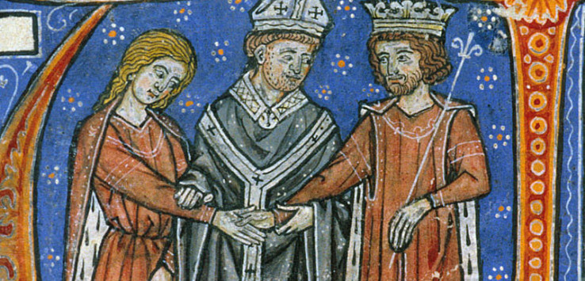
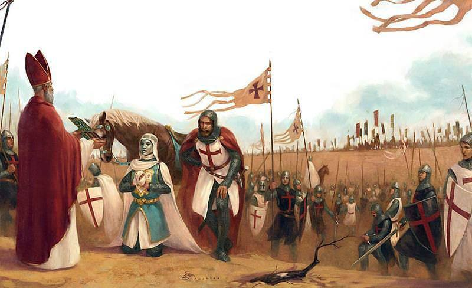
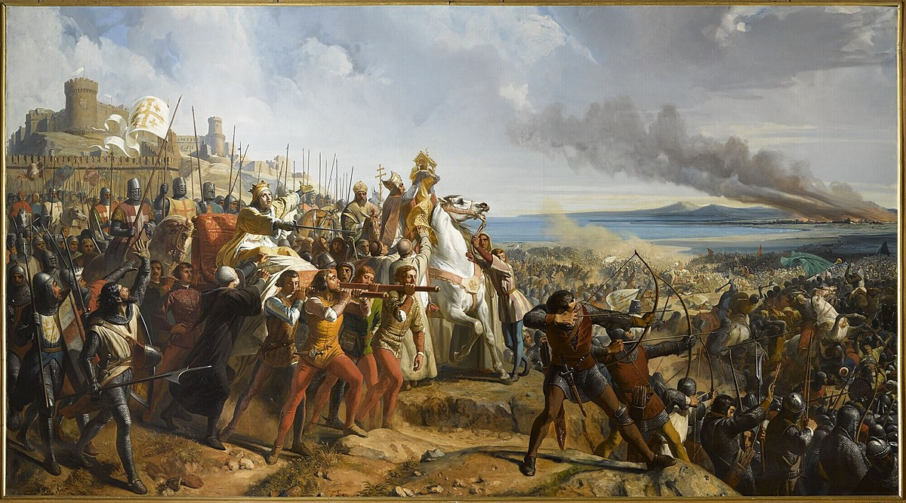
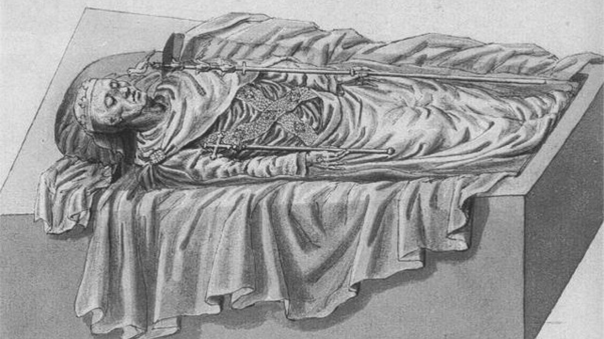

-
Baldwin Timeline
Introduction
Author: Unique UX
Created: June 8th, 2024Welcome, Baldwin IV enthusiasts! Explore the detailed timeline of Baldwin IV, the Leper King. Click or tap on the circles above to navigate through the significant events in his life.

Have an event you'd like to add to the Baldwin IV timeline? Submit your event using the form below.
-
Baldwin I
1100 - 1118Baldwin I, also known as Baldwin of Boulogne, was the first King of Jerusalem, ruling from 1100 to 1118. He was a prominent leader during the First Crusade and played a significant role in establishing the Crusader States in the Levant.
-
1100
11 November 1100Baldwin I became the first King of Jerusalem on 11 November 1100 after the death of his brother, Godfrey of Bouillon. He was a crucial figure in establishing the Kingdom of Jerusalem and expanding its territories.

-
1101
February 1101Baldwin faced significant challenges in early 1101, including securing the support of the local nobility and defending the fledgling kingdom against Muslim forces.
-
1102
15 August 1102On 15 August 1102, Baldwin I led a military campaign that successfully captured the key coastal city of Arsuf, which was vital for securing supply lines and trade routes.
-
1104
10 October 1104In 1104, Baldwin's reign saw efforts to establish effective governance and administration in the Kingdom of Jerusalem. He focused on consolidating his power and creating a stable political structure to support the kingdom's growth.
-
1118
2 April 1118Baldwin I died on 2 April 1118. His death marked the end of a significant era in the history of the Kingdom of Jerusalem, as he was a key figure in its foundation and expansion.

-
The Birth of Baldwin IV
1161Baldwin IV was born in 1161 to Amalric I of Jerusalem and Agnes of Courtenay. From a young age, he exhibited symptoms of leprosy, which would later earn him the nickname "The Leper King."
Early Signs of Leprosy
Baldwin's condition was first noticed by his tutor, William of Tyre, who observed that Baldwin felt no pain in his right hand during play. This insensitivity to pain was an early sign of leprosy, a disease that would profoundly impact his life and reign.
Family Background
Baldwin was the son of Amalric I, King of Jerusalem, and Agnes of Courtenay. His father was a strong ruler, and his mother came from the influential Courtenay family. Baldwin's royal lineage placed him in the line of succession from birth.
Education
Despite his illness, Baldwin received an education befitting a prince. His tutor, William of Tyre, documented his intelligence and determination. Baldwin was trained in the arts of war and governance, preparing him for his future role as king.
"Baldwin's disease was not apparent to others, but he felt no physical pain in his right hand and arm, which was a sign of the illness that was to mark his reign." - William of TyreAscension to the Throne
1174Baldwin IV ascended to the throne of Jerusalem in 1174 at the age of 13 after the death of his father, Amalric I. Despite his young age and illness, he proved to be a capable and determined ruler.
Regency of Raymond III
Due to Baldwin's young age, a regency was established with Raymond III of Tripoli as the regent. Raymond was a trusted and experienced leader who managed the kingdom's affairs until Baldwin came of age.
Political Challenges
Baldwin's ascension was marked by internal strife and external threats. The Kingdom of Jerusalem faced political instability, and Baldwin's leprosy was a cause of concern among his subjects and nobility. Despite these challenges, Baldwin took an active role in governance and military affairs.
Baldwin's Early Reign
Baldwin quickly demonstrated his capability as a ruler. He worked closely with his regent and advisors, making key decisions that impacted the kingdom's stability and security. His reign began with efforts to strengthen the defenses of Jerusalem and maintain alliances with neighboring states.
Battle of Montgisard
1177In 1177, Baldwin IV led his forces to a significant victory against Saladin at the Battle of Montgisard. Despite his debilitating illness, he demonstrated remarkable leadership and bravery.
Battle Details
The battle took place near Ramla. Baldwin, with only a small force, managed to surprise and rout Saladin's much larger army. The victory was a major morale booster for the Crusader states.
Strategic Importance
The Battle of Montgisard was strategically significant as it halted Saladin's advance into the Kingdom of Jerusalem. Baldwin's decisive action and unexpected attack played a crucial role in the battle's outcome.
Aftermath
The victory at Montgisard secured Baldwin's reputation as a formidable leader. It delayed Saladin's plans and strengthened the resolve of the Kingdom of Jerusalem. Baldwin's ability to lead despite his illness inspired his troops and subjects.
Defense of Kerak
1183In 1183, Baldwin IV successfully defended the castle of Kerak from Saladin's forces. His strategic acumen and determination were critical in withstanding the siege.
Siege Details
The siege of Kerak occurred during the wedding of Humphrey IV of Toron and Isabella of Jerusalem. Despite the celebration, the defenders, led by Baldwin and Reynald of Châtillon, prepared for Saladin's attack. The castle's defenses were tested, but Baldwin's leadership ensured the morale and coordination of the defenders.
Defense Strategies
Baldwin's strategy involved a combination of direct defense and sending messages for reinforcements. The arrival of the main Crusader army led by Baldwin himself forced Saladin to retreat. Baldwin's quick thinking and resourcefulness were pivotal in the defense of Kerak.
Outcome
The successful defense of Kerak was a significant achievement for Baldwin IV. It not only showcased his resilience and tactical prowess but also boosted the morale of the Crusader states. The event underscored Baldwin's capability as a military leader, even in the face of overwhelming odds.
Death of Baldwin IV
1185Baldwin IV passed away in 1185 after a prolonged struggle with leprosy. His reign was marked by significant military and political challenges, yet he is remembered as a resilient and courageous leader.
Final Years
Baldwin's health continued to deteriorate in his final years. Despite his illness, he continued to lead and make critical decisions for the kingdom. He appointed his sister Sibylla's son, Baldwin V, as his co-king and regent to ensure a smooth succession and the stability of the Kingdom of Jerusalem.
Succession Plan
Baldwin IV's succession plan involved crowning his nephew, Baldwin V, as co-king to prevent any disputes upon his death. This move was intended to provide continuity and stability for the kingdom, though it faced challenges from various factions within the nobility.
Legacy
Baldwin IV's legacy is that of a determined and wise ruler who faced immense challenges with courage. His efforts to defend Jerusalem and maintain the stability of his kingdom are remembered as significant contributions to the history of the Crusader states. Despite his illness, he led his people with strength and resilience, earning respect and admiration that endures to this day.